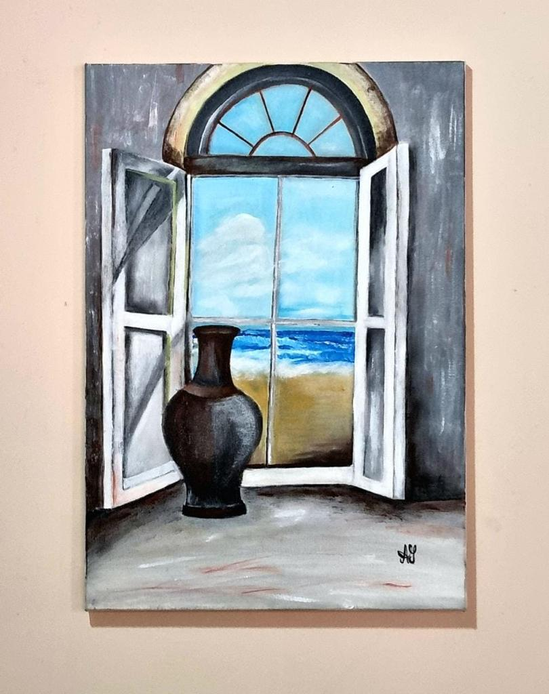

Toggle navigation
A Gallery
AG Gallery
Menú
Pagina principal
Inicio
Servicios
Extrainfo
Promociones
Contacto
AG Gallery | Website created by Ambar Guerrero
Baile en el moulin en la galette
Ver más
El estanque de Ninfeas
Ver más
El grito
Ver más
El hombre del hombre magritte
Ver más
El jardin de las delicias
Ver más
El juicio final
Ver más
Guernica
Ver más
La creacion de adan
Ver más
Las dos fridas.
Ver más
El nacimiento de venus.
Ver más
La persistencia de la memoria
Ver más
Impresion sol naciente
Ver más
La balsa de la medusa
Ver más
La joven de la perla
Ver más
la libertad guiando al pueblo
Ver más
La ronda de noche
Ver más
las meninas
Ver más
Las señoritas de avignon
Ver más
Retrato de giovanni arnolfini y su esposa
Ver más
retrato de la madre del artista
Ver más
Tarde de domingo en la isla de la grande jatte
Ver más
Terraza de cafe por la noche
Ver más
Gotico Estadounidense
Ver más

Puerta vista al mar
Pulsa en la imagen para algunas curiosidades de la pintura al óleo
Elaborado por: Ambar Guerrero,
amguerrero@uaa.edu.py
Arriba
Siguiente